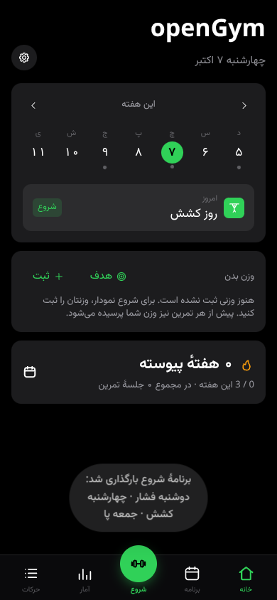
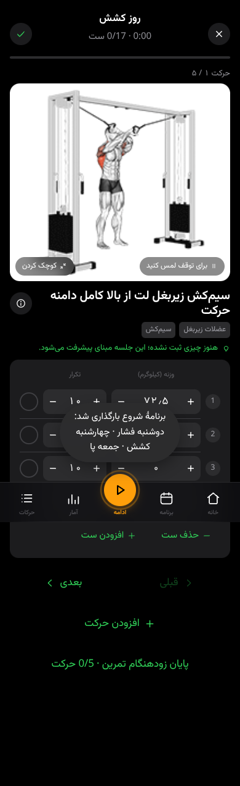
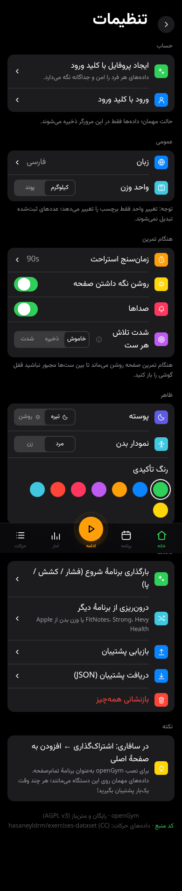

همراه تمرینهای شما
از برنامهٔ هفتگی تا آخرین تکرار؛ اطلاعات تمرین در اختیار شماست.
تمرین هدایتشده
ستها، تکرارها، وزنههای پیشنهادی، سوپرست و زمانسنج استراحت را در یک صفحه دنبال کنید.
برنامهٔ هفتگی
روزهای تمرین و برنامههای دلخواه بسازید؛ برنامهٔ شروع فشار، کشش و پا نیز در دسترس است.
کتابخانهٔ ۱۳۲۴ حرکت
نامهای فارسی، تصویر، پویانمایی، جستوجوی فارسی و فیلتر عضله و تجهیزات.
پیگیری پیشرفت
رکوردهای شخصی، حجم تمرین، روند وزن بدن، نمودارها و تقویم فعالیت را ببینید.
فارسی و راستچین
رابط، تنظیمات، پنل مدیریت، اعلانها و خروجی چاپی فارسی؛ ورودی عددهای فارسی و عربی نیز پذیرفته میشود.
دادههای قابل انتقال
پشتیبان کامل بگیرید، سابقهٔ برنامههای دیگر را وارد کنید و برنامهٔ تمرینی را به اشتراک بگذارید.
حساب و همگامسازی
در نسخهٔ سروری، ورود با کلید ورود، پروفایلهای جداگانه و همگامسازی میان دستگاهها در دسترس است.
مربی اختیاری
با اتصال حساب ارائهدهندهٔ هوش مصنوعی، پیشنهاد تغییر برنامه را ببینید و پیش از اعمال، آن را بررسی کنید.
تصاویر نسخهٔ فارسی



دسترسی به برنامه
برای نسخهٔ کامل، برنامه را روی سرور خودتان راهاندازی کنید. نسخهٔ مرورگری بدون سرور، دادهها را فقط در همان مرورگر ذخیره میکند.
راهنمای راهاندازیروش استفاده را انتخاب کنید
مرورگر و سرور شخصی
ورود با کلید ورود، همگامسازی و پنل مدیریت؛ مناسب استفاده در چند دستگاه.
راهاندازی با داکراندروید و آیفون
نسخهٔ موبایل را از کد فارسی بسازید، یا نسخهٔ وب را به صفحهٔ اصلی گوشی اضافه کنید.
راهنمای موبایلمتنباز و قابل بررسی
کد برنامه تحت مجوز AGPL-3.0 منتشر میشود. تغییرات نسخهٔ فارسی و منابع اصلی در مخزن قابل بررسی هستند.